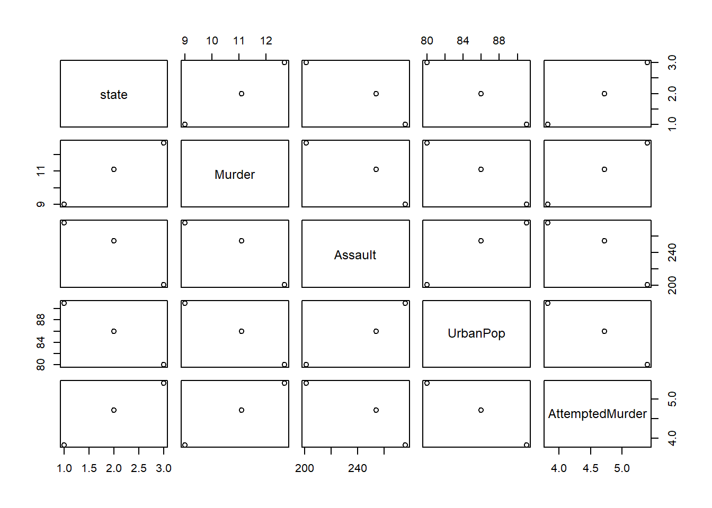

10 Dataframe Manipulation
Objective: To reformat data frames using tidyr and learn how to pipe using magrittr
Quick Review of vectors and data frames
# Store data/parameters in objects in R by assigning it to a variable using: variable_Name <- value
# Make a "character" vector called person using function c()
people <- c("Tinky", "Dipsy", "Lala", "Po")
# Assign names to vector using a character vector of same length
names(people) <- c("purple", "green", "yellow", "red")
# Note () brackets reserved for functions
# Access data in vectors using []
people[c(1,3)] #use indexing 1st and 3rd elements## purple yellow
## "Tinky" "Lala"people[1:3] #1st, 2nd and 3rd person## purple green yellow
## "Tinky" "Dipsy" "Lala"people[-2] #negative indexing to get all values except the 2nd## purple yellow red
## "Tinky" "Lala" "Po"people[c(T,T,F,F)] #use logical vector to get 1st and 2nd elements## purple green
## "Tinky" "Dipsy"people[c("purple", "yellow")] #use character vector to get 1st and 3rd elements *for named vectors## purple yellow
## "Tinky" "Lala"# Make a dataframe or table called "df" to store vectors of different data types
# Assign column names for each variable using =
df <- data.frame(Person=people,
Height=seq(from=180, to=120, length.out = 4))
# Access data in df using [rows_of_interest, cols_of_interest]
df[1,] #1st row## Person Height
## purple Tinky 180df[,1] #1st column## [1] "Tinky" "Dipsy" "Lala" "Po"df[,c(T,F)] #1st column## [1] "Tinky" "Dipsy" "Lala" "Po"df[,"Person"] #1st column## [1] "Tinky" "Dipsy" "Lala" "Po"df$Person #1st column## [1] "Tinky" "Dipsy" "Lala" "Po"# Modify variables in dataframe by re-assignment
df$Height <- df$Height + 2 #add 2 to all heightsToday’s tutorial:
Original tutorials: - tidyr: http://www.sthda.com/english/wiki/tidyr-crucial-step-reshaping-data-with-r-for-easier-analyses - magrittr pipe: https://www.datacamp.com/community/tutorials/pipe-r-tutorial - dplyr pipe: https://uoftcoders.github.io/studyGroup/lessons/r/intro/lesson/
10.1 Reshape Data
- using tidyr package
- ways to manipulate dataframes to facilitate organization and improve readability of code
Useful functions:
gather(): gather (collapse) columns into rows
spread(): spread rows into columns
separate(): separate one column into multiple using “delimiter”
unite(): unite multiple columns into one using “delimiter”
# # Install package
# install.packages("tidyr")
# Load package into environment to use
library("tidyr")## Warning: package 'tidyr' was built under R version 4.1.310.1.1 Data
- Take a subset of built-in “USArrests” data sets (state x violent crimes)
head(USArrests)## Murder Assault UrbanPop Rape
## Alabama 13.2 236 58 21.2
## Alaska 10.0 263 48 44.5
## Arizona 8.1 294 80 31.0
## Arkansas 8.8 190 50 19.5
## California 9.0 276 91 40.6
## Colorado 7.9 204 78 38.7# Create a new data frame with just 4 of the observations and remove 4th column
df <- USArrests[c(5,12,32,43), -4]
# Add a column to beginning of data frame with state names = row names
df <- cbind(state = rownames(df), df)
# Remove row names
rownames(df) <- NULLgather(): collapse columns into rows
- collapses multiple columns into key-value pairs
- converts data format “wide” to long
- alternative of melt() function [in reshape2 package]
- useful in ggplot, applying a function (ex. p_adjust() to multiple samples at once)
gather(data, key, value, …)
Arguments: data = data frame key, value = Names of key and value columns to create in output value = Specification of columns to gather. Allowed values are: variable names if you want to select all variables between a and e, use a:e if you want to exclude a column name y use -y for more options, see: dplyr::select()
Examples of usage: Gather all columns except the column state (-)
gather(df, key = "arrest_variable", #this new column will be your column names
value = "arrest_rate", #values
-state)## state arrest_variable arrest_rate
## 1 California Murder 9.0
## 2 Idaho Murder 2.6
## 3 New York Murder 11.1
## 4 Texas Murder 12.7
## 5 California Assault 276.0
## 6 Idaho Assault 120.0
## 7 New York Assault 254.0
## 8 Texas Assault 201.0
## 9 California UrbanPop 91.0
## 10 Idaho UrbanPop 54.0
## 11 New York UrbanPop 86.0
## 12 Texas UrbanPop 80.0Gather only Murder and Assault columns
gather(df, key = "arrest_variable",
value = "arrest_rate",
Murder, Assault)## state UrbanPop arrest_variable arrest_rate
## 1 California 91 Murder 9.0
## 2 Idaho 54 Murder 2.6
## 3 New York 86 Murder 11.1
## 4 Texas 80 Murder 12.7
## 5 California 91 Assault 276.0
## 6 Idaho 54 Assault 120.0
## 7 New York 86 Assault 254.0
## 8 Texas 80 Assault 201.0Note that, the two columns Murder and Assault have been collapsed and the remaining columns (state, UrbanPop and Rape) have been duplicated.
Gather all variables between Murder and UrbanPop
df2 <- gather(df,
key = "arrest_variable",
value = "arrest_rate",
Murder:UrbanPop)spread(): spread two columns into multiple columns
- spread() does the opposite of gather(). It takes two columns (key and value) and spreads into multiple columns
- produces a wide data format from a long one
- alternative of the function cast() [in reshape2 package]
spread(data, key, value)
Arguments: - key = name of the column whose values will be used as column headings. - value = name of the column whose values will populate the cells.
# Spread df to turn back to the original data
spread(df2,
key = "arrest_variable",
value = "arrest_rate")## state Assault Murder UrbanPop
## 1 California 276 9.0 91
## 2 Idaho 120 2.6 54
## 3 New York 254 11.1 86
## 4 Texas 201 12.7 80unite(): Unite multiple columns into one
- takes multiple columns and paste them together into one.
unite(data, col, …, sep = "_")
Arguments: col = The new (unquoted) name of column to add. sep = Separator to use between values
# unites the columns Murder and Assault
df4 <- unite(df,
col = "Murder_Assault",
Murder, Assault,
sep = "_")
df4## state Murder_Assault UrbanPop
## 1 California 9_276 91
## 2 Idaho 2.6_120 54
## 3 New York 11.1_254 86
## 4 Texas 12.7_201 80separate(): separate one column into multiple
- seperate() does the opposite of unite()
- takes values inside a single character column and separates them into multiple columns
separate(data, col, into, sep = “[^[:alnum:]]+”)
Arguments:
col = Unquoted column names
into = Character vector with names of new columns to be created
sep = Separator between columns:
If character, is interpreted as a regular expression
If numeric, interpreted as positions to split at
# Separate the column Murder_Assault [in df4] into two columns Murder and Assault:
separate(df4,
col = "Murder_Assault",
into = c("Murder", "Assault"),
sep = "_")## state Murder Assault UrbanPop
## 1 California 9 276 91
## 2 Idaho 2.6 120 54
## 3 New York 11.1 254 86
## 4 Texas 12.7 201 80Alternative forms: gather_(), spread_(), unite_() - useful when making your own functions
# Make variable names (ie. would be arguments in your functions)
col_names <- c("Murder", "Assault")
key_column <- "arrest_variable"
value_column <- "arrest_rate"
# opposite functions:
# alt to gather() - wide to long format
df2 <- gather_(df,
key_col = key_column,
value_col = value_column,
gather_cols = col_names) # define columns to gather## Warning: `gather_()` was deprecated in tidyr 1.2.0.
## Please use `gather()` instead.
## This warning is displayed once every 8 hours.
## Call `lifecycle::last_lifecycle_warnings()` to see where this warning was generated.# alt to spread() - long to wide format
spread_(df2,
key = "arrest_variable",
value = "arrest_rate")## Warning: `spread_()` was deprecated in tidyr 1.2.0.
## Please use `spread()` instead.
## This warning is displayed once every 8 hours.
## Call `lifecycle::last_lifecycle_warnings()` to see where this warning was generated.## state UrbanPop Assault Murder
## 1 California 91 276 9.0
## 2 Idaho 54 120 2.6
## 3 New York 86 254 11.1
## 4 Texas 80 201 12.7# opposite functions:
# alt to unite() - unite many columns into one
df4 <- unite_(df,
col = "Murder_Assault",
from = c("Murder", "Assault"),
sep = "_")## Warning: `unite_()` was deprecated in tidyr 1.2.0.
## Please use `unite()` instead.
## This warning is displayed once every 8 hours.
## Call `lifecycle::last_lifecycle_warnings()` to see where this warning was generated.# alt to seperate() - seperate one column into multiple
separate_(df4,
col = "Murder_Assault",
into = c("Murder", "Assault"),
sep = "_")## Warning: `separate_()` was deprecated in tidyr 1.2.0.
## Please use `separate()` instead.
## This warning is displayed once every 8 hours.
## Call `lifecycle::last_lifecycle_warnings()` to see where this warning was generated.## state Murder Assault UrbanPop
## 1 California 9 276 91
## 2 Idaho 2.6 120 54
## 3 New York 11.1 254 86
## 4 Texas 12.7 201 8010.2 Pipe operator
- in R it is… %>%
- pipes are used to chain multiple operations
- similar to how the Bash shell | pipe works
- forward-pipe operator is %>% (in magrittr and dplyr packages)
# install.packages("magittr")
library(magrittr)##
## Attaching package: 'magrittr'## The following object is masked from 'package:tidyr':
##
## extractx %>% f is equivalent to f(x).
Read more: https://www.datacamp.com/community/tutorials/pipe-r-tutorial
advantages: decrease development time and to improve readability and maintainability of code
Example 1
# First, df is passed to gather() function
# Next, the output of gather() is passed to some functions for transformations..
# Then, we convert to its original data format by unite() function
new_df <-
df %>%
# convert to long format
gather(key = "arrest_variable",
value = "arrest_rate",
Murder:UrbanPop) %>%
# Apply some transaformations here
#..
# return to original wide format
unite(col = "attribute_estimate",
"arrest_variable", "arrest_rate")
# note: we don't keep mentioning the "df" object because that is the data being passed on Example 2:
# Manipulate data, but combine operations using pipe
new_df <-
df %>%
subset(Assault > 200) %>%
transform(AttemptedMurder = Murder %>% multiply_by(0.4251)) %>%
print %>%
plot## state Murder Assault UrbanPop AttemptedMurder
## 1 California 9.0 276 91 3.82590
## 3 New York 11.1 254 86 4.71861
## 4 Texas 12.7 201 80 5.39877
# # Explanation ----
# new_df <- # final output will be assigned to this variable
# df %>% # pass in original data frame..
# subset(Assault > 200) %>% # subset so Assault column > 200
# transform(AttemptedMurder = Murder %>% multiply_by(0.4251)) %>% # add a new column
# print %>% # print to console
# boxplot # visualize and save plot 10.3 Practice
The built-in R dataset “ChickWeight” provides experimental data on the effect of diet on early growth of chicks.
- Look at the structure of the data (str()). How many rows are there?
- This data is presented in a “long” format. Spread the counts data across columns in “wide” format specified by the key “Time” and value “weight”. Save output a variable “df”.
- Since the new columns are the timepoints of the experiment (“0:21”), unite these back into a single column called “Timepoint”. Save in a variable called df2.
- Do b) and c) in a single line of code using a pipe operator. That is, make df2 without producing df.
Solution
# # a) use str()
# str(ChickWeight)
# # To find number of rows, look at how many observations there are (obs.)
# # or use nrow() or dim()
# nrow(ChickWeight)
# dim(ChickWeight)
# # ANSWER: 578
#
# # b) use spread()
# library(tidyr)
# df <- spread(ChickWeight, key = "Time", value = "weight")
#
# # c) unite
# # time_cols <- colnames(df)[3:ncol(df)]
# df2 <- unite(df, col="Timepoint", c("0", "2", "4", "6", "8", "10", "12", "14", "16", "18", "20", "21"), sep = "_")
#
# # d) use %>% from dplyr
# library(magrittr)
# df2 <- ChickWeight %>%
# spread(key = "Time", value = "weight") %>%
# unite(col="Timepoint", c("0", "2", "4", "6", "8", "10", "12", "14", "16", "18", "20", "21"), sep = "_")